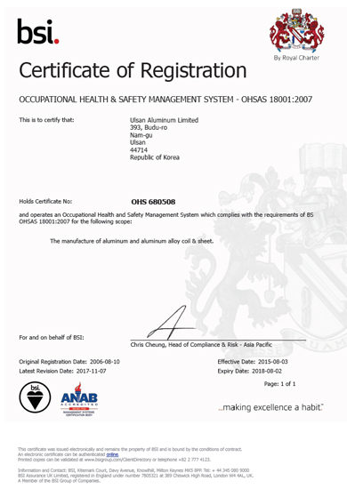

E·H·S
Environmental Health Services
Environmental Health Services
울산알루미늄은 우수한 환경 경영, 보건, 안전을 통해 이해관계자, 특히 고객, 직원, 주주, 지역사회의 성공을 지원하는데에 전념하고 있습니다. 특히, 운영 및 업무 절차의 지속적 개선에 재원과 인적 자원을 제공하며, 이를 통해 달성하고자 하는 목표는 다음과 같습니다.
ISO 14001 환경 관리 시스템 표준

OHSAS 18001 산업 보건 및 안전 관리 시스템안전 원칙 울산알루미늄은 일상적 작업의 기준이 되는 ‘7대 안전 원칙’을 준수하고 있습니다.
안전보건활동 울산알루미늄은 “안전은 우선순위를 매길 수 없는 핵심 가치” 라는 경영진의 철학 아래 모든 직원이 매일 사랑하는 가족의 품으로 안전하게 돌아갈 수 있도록 사고 없는 안전한 일터를 만들기 위해 전사적으로 끊임없는 노력을 해오고 있습니다.


보건관리활동 울산알루미늄은 근로자의 안전, 건강 및 안녕을 보호하고 증진시키는 목적으로 산업보건 활동을 실시하고 있습니다.

안전보건교육 및 훈련 울산알루미늄은 기존의 단방향식 딱딱한 안전교육을 탈피해 작업자와 의견을 교환해 가며 안전작업 방법을 모색해 봄으로써 참여 및 체험 중심의안전교육을 실시해 나가고 있습니다.
환경관리 울산알루미늄은 온실가스, 대기 및 수질, 폐기물에 이르기까지 환경 관리 전분야에 엄격한 자체 환경기준을 적용하여 체계적으로 관리하고 있습니다.
울산알루미늄의 모든 임직원은 바람직한 조직 문화를 바탕으로 조직의 경쟁력을 강화하기 위해 다섯 가지 기업문화를 실천하고 있습니다. 기업문화 다섯 가지는 울산알루미늄의 Focused 5 목표 달성을 위한 올바른 믿음과 행동을 이끌어 가는 바탕이 됩니다.